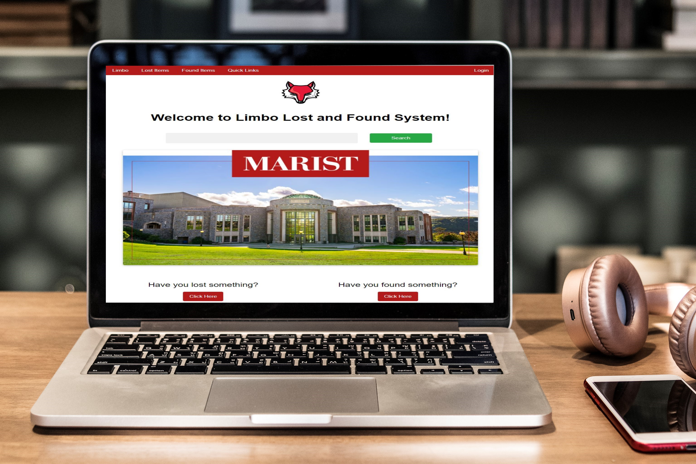
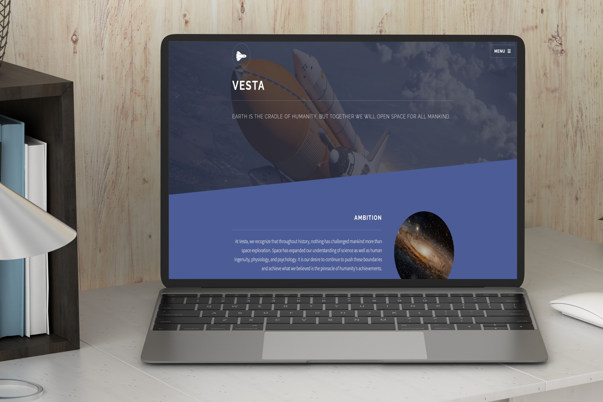
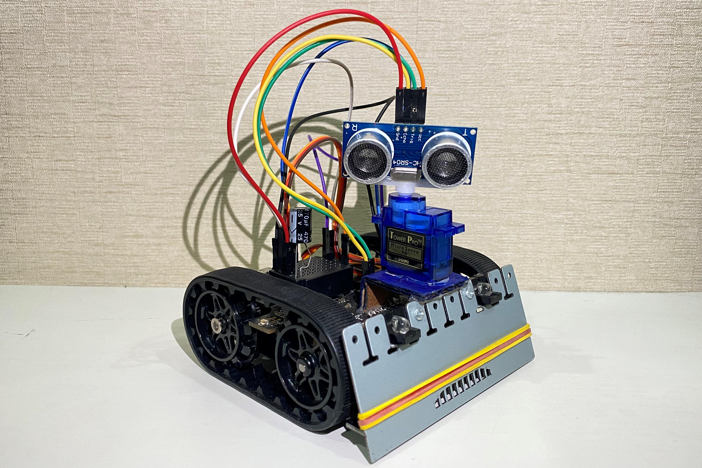
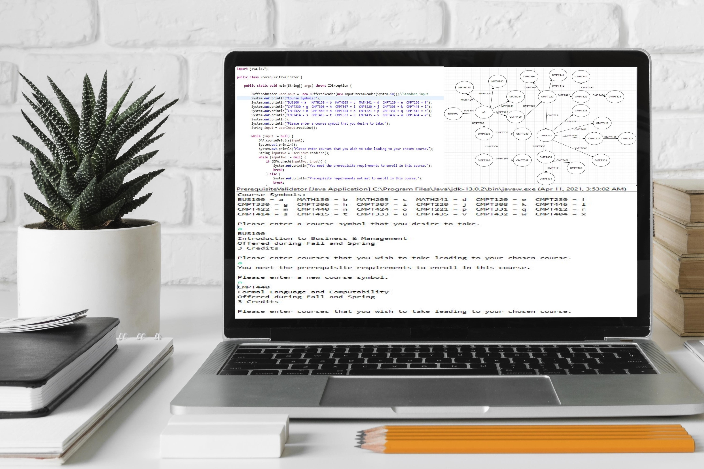
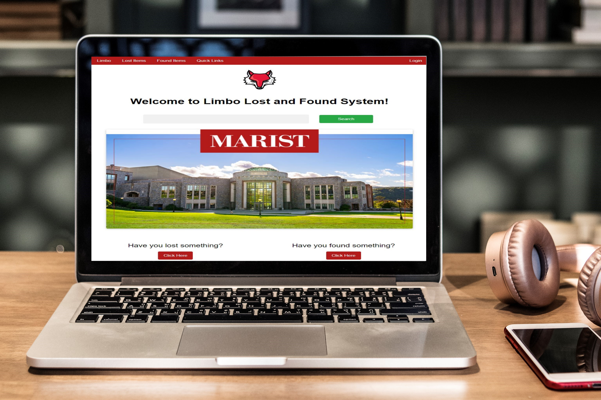
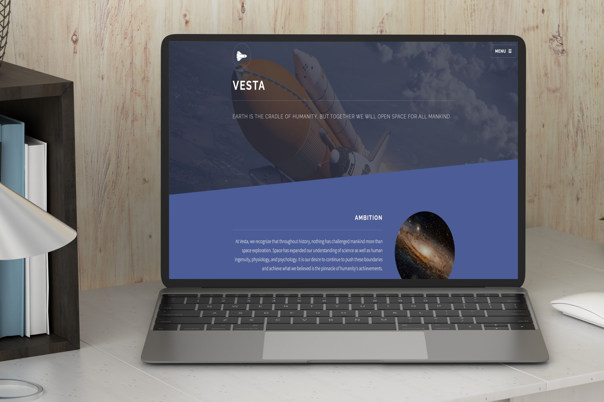
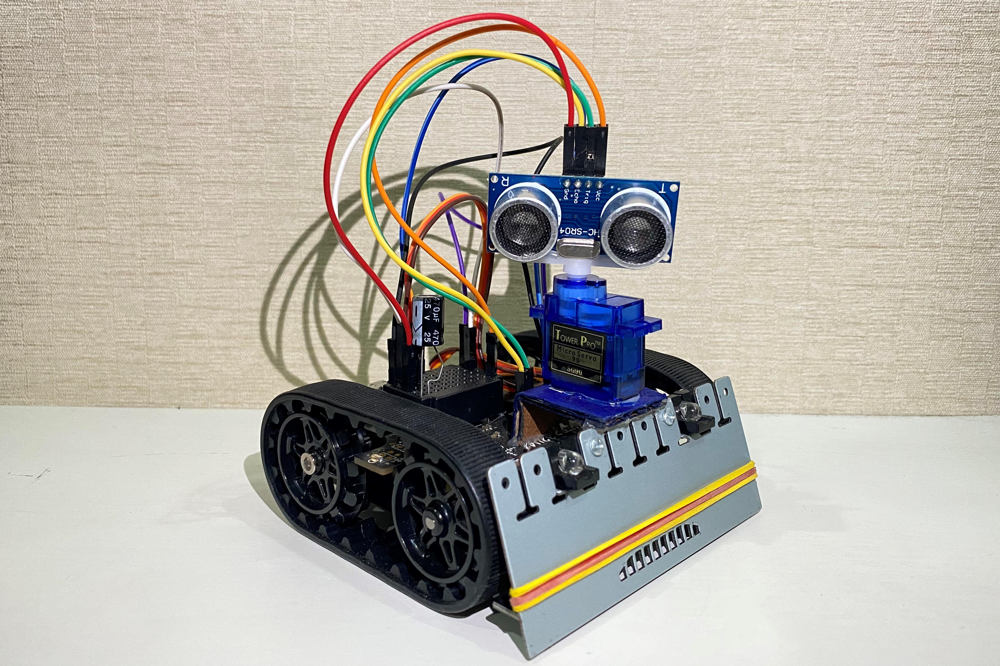
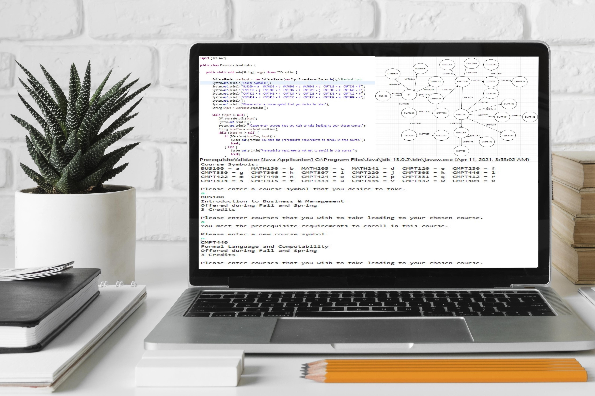

Featured Projects IzuraOS Browser-based OS that uses the browser session storage for memory which simulate physical components. View Live View Code  Limbo Web application that allows Marist College students to report and find their lost items. View Code  Vesta A mock static website about a fictitious space tourism company that is inspired by Virgin Galactic. View Live View Code  Zumo32U4 A robotic project utilizing the Pololu's Zumo 32U4 Robot, SG90 Servo, and HC-SR04 Ultrasonic Sensor. Video Demo View Code  Prerequisite Validator Course registration planning tool for Marist computer science undergraduate students. View Code
IzuraOS Browser-based OS that uses the browser session storage for memory which simulate physical components. View Live View Code
 Limbo Web application that allows Marist College students to report and find their lost items. View Code
 Vesta A mock static website about a fictitious space tourism company that is inspired by Virgin Galactic. View Live View Code
 Zumo32U4 A robotic project utilizing the Pololu's Zumo 32U4 Robot, SG90 Servo, and HC-SR04 Ultrasonic Sensor. Video Demo View Code
 Prerequisite Validator Course registration planning tool for Marist computer science undergraduate students. View Code